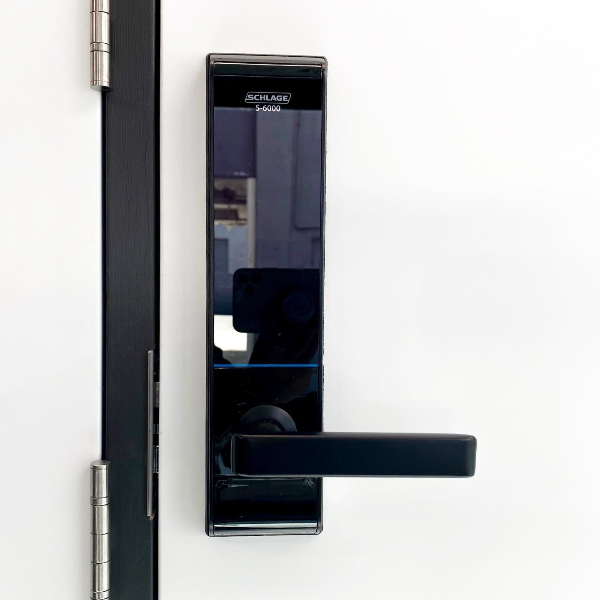
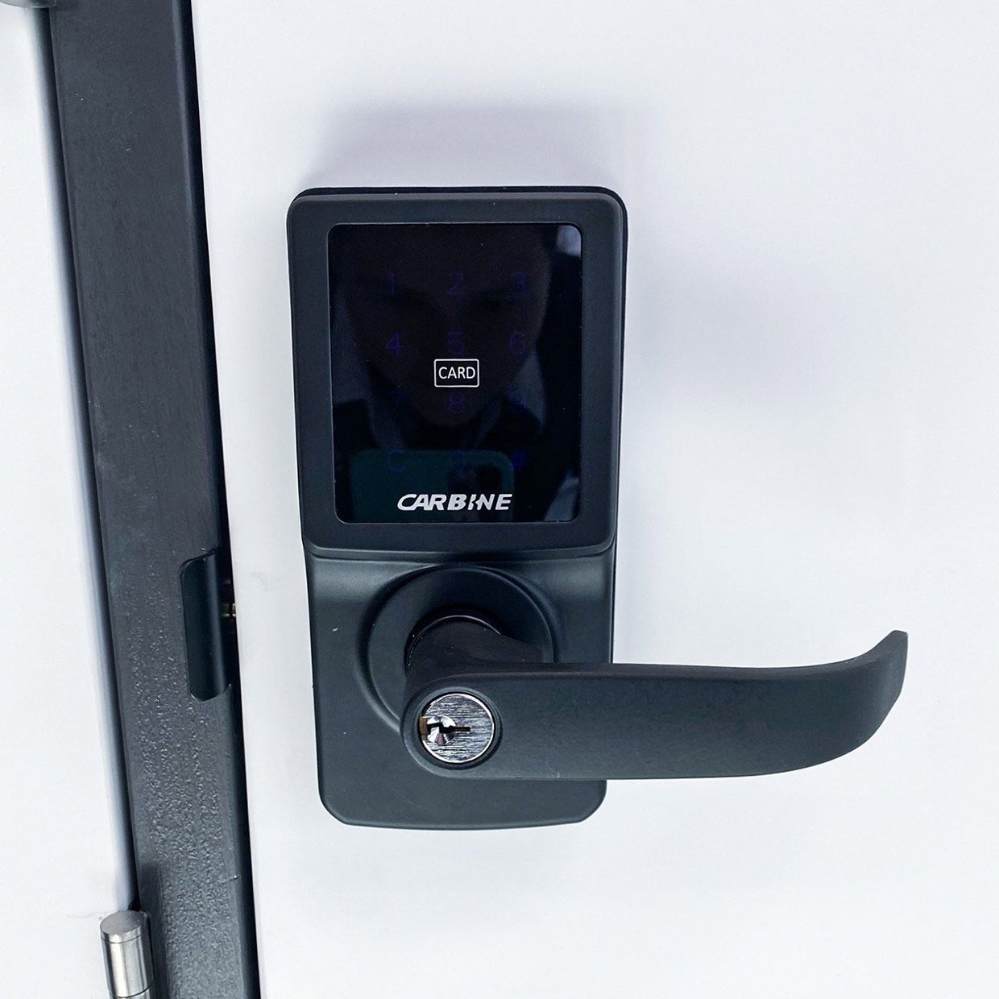

On this page
AT A GLANCE
At SPL Security Solutions, we proudly offer 24/7 mobile locksmith services across Main Beach to resolve your lock and key challenges.
Get A Free Quote Now!

Locksmith Services Main Beach & Surrounds
At SPL Security Solutions, we proudly offer 24/7 mobile locksmith services across Main Beach to resolve your lock and key challenges. Emergencies can strike at any time, whether it’s a misplaced key, a broken lock or a sudden security breach. Our skilled locksmiths are equipped to handle any situation quickly and professionally, ensuring your property remains safe and secure.
Our services cover everything from residential lockouts and rekeying to commercial access control upgrades and automotive key programming. We aim to minimise disruption and provide on-site solutions tailored to your unique needs. Whether you’re locked out of your car in the early hours or need urgent lock repairs after a break-in, we’re here to help.
Call us on (07) 5588 8111 for prompt and reliable locksmith assistance in Main Beach.
Our residential locksmith services in Main Beach help homeowners resolve lockouts, repair damaged locks and upgrade home security systems. From emergency assistance to lock upgrades, we provide reliable and tailored solutions to protect your property.
Our commercial locksmith services in Main Beach provide businesses with advanced locking systems, access control solutions and emergency repairs. We help safeguard commercial properties and ensure smooth daily operations.
Our automotive locksmith services in Main Beach are designed to address vehicle lockouts, lost keys, and ignition repairs. From transponder programming to key replacements, we deliver fast and efficient services to keep you on the move.
Our restricted key systems in Main Beach offer advanced access control by preventing unauthorised duplication. These solutions are perfect for residential, commercial and industrial properties requiring enhanced security.
We provide expert support for safes in Main Beach, including installation, unlocking, and maintenance. Protect your valuables with high-quality safes designed to resist theft, fire and water damage.
Our security system services in Main Beach combine CCTV, alarms and access control for complete protection. These customised setups offer robust security for both residential and commercial properties.
Our lock hardware solutions in Main Beach focus on innovative designs and reliable strength. From heavy-duty deadbolts to advanced smart locks, we offer products that provide long-lasting security for your property.
Upgrade your property in Main Beach with durable and functional door hardware. Our range includes sliding door mechanisms, high-strength hinges and energy-efficient closers, offering security and convenience.
We offer a versatile range of door hardware, from fire-resistant fittings to smooth-operating closers and stylish handles, suitable for contemporary and traditional designs in Main Beach.
Emergency Locksmith Services Main Beach
Lock-related emergencies can happen when you least expect them, creating stress and inconvenience. Here are some of the most common reasons to call an emergency locksmith:
- Accidental Lockouts
It’s easy to misplace your keys or accidentally lock them inside your home, office or car. Emergency locksmiths can help you regain access quickly and without damage. - Lost or Stolen Keys
Missing or stolen keys can leave your property vulnerable to unauthorised access. Rekeying or replacing locks immediately ensures your safety. - Damaged Locks or Break-Ins
A damaged or compromised lock following a break-in requires urgent attention to restore your property’s security. - Malfunctioning Electronic Locks
Digital locks, card readers and smart lock systems can sometimes fail unexpectedly. A locksmith can troubleshoot and repair these issues to keep your property secure. - Urgent Safe Access
If you’re unable to open a safe containing critical documents or valuables, an emergency locksmith can provide expert unlocking services.

Contact Details
24/7 Emergency Locksmiths or Security Tech
Trading Hours
Retail Shop

Frequently Asked Questions
-
What should I do if my lock is damaged after a break-in?
If your lock is damaged, avoid using it to prevent further complications. Contact a locksmith immediately to assess the situation and replace or repair the lock to restore your security.
-
Are digital locks secure during power outages?
Yes, most digital locks have backup battery systems to ensure they function during power outages. For added reliability, choose models with emergency key override options.
Locksmith & Security Solutions Gold Coast, Brisbane & Northern NSW